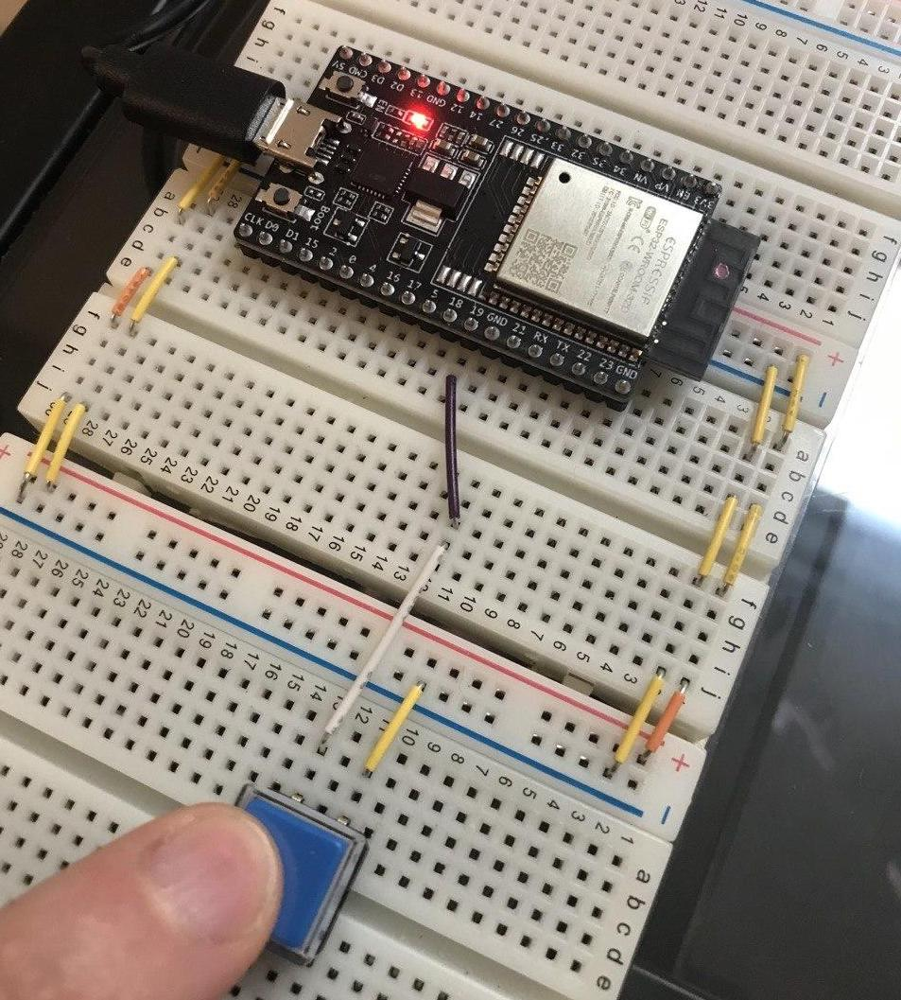
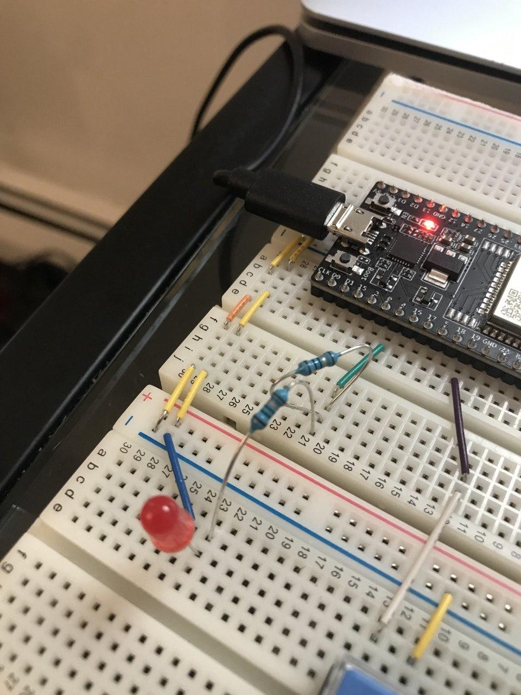

6.810 Engineering Interactive Technologies (fall 2020)
Part 2: Connecting Micro-controller to UI
In the next weeks, we are going to build a range of different physical user interfaces. Below, you see the basic pipeline we will cover before going into more advanced examples.
The pipeline consists of four steps:
- Fabricating the Sliders, Dials, and Multi-touch Pad (Printed Electronics)
- Wiring up the Electronics and Performing Signal Processing on the Inputs from the User (Arduino)
- Sending the results from the microcontroller to a User Interface (Arduino-Processing connection)
- Displaying the Result in a graphical user interface on screen (Processing)
Reading input from the Microcontroller
and Displaying it in Processing
First, we are going to read some input from our microcontroller and display the resulting action in Processing.
In particular, we are going to wire up a button, and when the button is pressed, we will show this in Processing by coloring the corresponding button in the digital UI.
Wiring Up a Button
Let's start by wiring up a button.

Create Microcontroller Script that Writes onto Serial Monitor
Next, we need to create the microcontroller script that reads the input from the button.
When the button is pushed, we want to write a message to the Serial port that indicates the push state.
Our seperate Processing application will then listen to the Serial port and whenever it sees a specific value, it will know if the button is pushed or not.
Your task: Write the Arduino script for reading the button input. When the button is pushed, write a 0 to the serial port using Serial.write(0). If the button is unpushed, write a 1 to the serial port using Serial.write(1). You can use any Serial baudrate you like, in our example we will use 9600.
Important: Once you confirmed that you button works, make sure you remove all Seriel.println debugging statements you may have used since they will otherwise add noise to the Serial stream the Processing application will listen to.
Create Processing Script that Listens to Serial Monitor
Now that we are writing 0 and 1 to the Serial Monitor depending on whether the button is pressed or not pressed, we can write the Processing script that listens to the Serial Monitor and changes its visualization depending on the number read.
To do this, you are going to use the Serial library.
import processing.serial.*;
Next, you need to create a new port by creating an object from this class:
Serial myPort;
To initialize this object, you need a reference to the current application ('this'), a portname, and the baudrate to which the object should listen. You already know the baudrate (9600) and you can get the portname with this:
String portName = Serial.list()[2]; //check which port you use: 0, 1, 2? it helps to verify you are listening to the right port with print(portName);
Now you can initialize your Serial connection:
myPort = new Serial(this, portName, 9600);
In the draw function, you need to first check if the port is available, and then you can read the value from the port:
int val;
if ( myPort.available() > 0) { // If data is available,
val = myPort.read(); // read it and store it in val
}
Now you can do something based on the value:
if (val == 0) { // If the serial value is 0,
fill(0); // set fill to black
}
else if (val == 1) { // If the serial value is not 0,
fill(255); // set fill to light gray
}
rect(50, 50, 100, 100);
Run the code and you should get a processing button that lights up black if your physical button is pushed and white if it is not pushed.
Writing Output from Processing
and Using it on the Microcontroller
Let's do it the other way around and write some output from Processing onto the microcontroller.
In our simple example, we will light up an LED when the user clicks a button in the Processing UI.
Wiring Up an LED

Create Microcontroller Script that Reads from Serial Monitor
This part is very similar to the previous code, just that instead of Serial.write() you are now going to use Serial.read() to determine if the LED should be high or low.
Complete the rest of the Arduino script for turning on/off your LED and test it manually by setting val to 0 or 1 manually. If the LED lights up, remove the line again and have it read from the Serial monitor.
Create Processing Script that Writes to Serial Monitor
Once you uploaded your Arduino code, we are now ready to write a Processing script to write to the serial monitor if the LED should be on or off.
Whenever a button is clicked in the Processing UI, we want to turn on the LED.
The setup code is the same as above, but now you are using
myPort.write(0); // 0 or 1 depending on state
Your task: Complete the Processing script so that when you click on a button, the LED comes on.
Important: Note that there is a 3-5 second delay before the LED comes on which is due to the Serial port speed.
Conclusion
Great, so now we can both read microcontroller input and display it in Processing and also use Processing to control our microcontroller. This will come in handy in the future when we want to build and test more advanced user interfaces.
and Displaying it in Processing
if ( myPort.available() > 0) { // If data is available,
val = myPort.read(); // read it and store it in val
}
fill(0); // set fill to black
}
else if (val == 1) { // If the serial value is not 0,
fill(255); // set fill to light gray
}
rect(50, 50, 100, 100);
and Using it on the Microcontroller